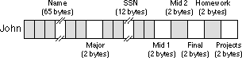

|
Table of Content | Chapter Five (Part 4) |
|
Table of Content | Chapter Five (Part 4) |
| CHAPTER FIVE: VARIABLES AND DATA STRUCTURES (Part 3) |
| 5.6.3 -
Structures 5.6.4 - Arrays of Structures and Arrays/Structures as Structure Fields 5.6.5 - Pointers to Structures |
The second major composite data structure is the Pascal record or C structure. The Pascal terminology is probably better, since it tends to avoid confusion with the more general term data structure. However, MASM uses "structure" so it doesn't make sense to deviate from this. Furthermore, MASM uses the term record to denote something slightly different, furthering the reason to stick with the term structure.
Whereas an array is homogeneous, whose elements are all the same, the elements in a structure can be of any type. Arrays let you select a particular element via an integer index. With structures, you must select an element (known as a field) by name.
The whole purpose of a structure is to let you encapsulate different, but logically related, data into a single package. The Pascal record declaration for a student is probably the most typical example:
student = record
Name:
string [64];
Major:
integer;
SSN:
string[11];
Midterm1:
integer;
Midterm2:
integer;
Final:
integer;
Homework:
integer;
Projects:
integer;
end;
Most Pascal compilers allocate each field in a record to contiguous memory locations. This means that Pascal will reserve the first 65 bytes for the name, the next two bytes hold the major code, the next 12 the Social Security Number, etc.
In assembly language, you can also create structure types
using the MASM struct statement. You would encode the above record in
assembly language as follows:
student struct Name char 65 dup (?) Major integer ? SSN char 12 dup (?) Midterm1 integer ? Midterm2 integer ? Final integer ? Homework integer ? Projects integer ? student ends
Note that the structure ends with the ends
(for end structure) statement. The label on the ends statement must be the
same as on the struct statement.
The field names within the structure must be unique. That is, the same name may not appear two or more times in the same structure. However, all field names are local to that structure. Therefore, you may reuse those field names elsewhere in the program.
The struct directive only defines a structure
type. It does not reserve storage for a structure variable. To actually reserve storage
you need to declare a variable using the structure name as a MASM statement, e.g.,
John student {}
The braces must appear in the operand field. Any initial values must appear between the braces. The above declaration allocates memory as shown in below:

If the label John corresponds to the base
address of this structure, then the Name field is at offset John+0,
the Major field is at offset John+65, the SSN field
is at offset John+67, etc.
To access an element of a structure you need to know the
offset from the beginning of the structure to the desired field. For example, the Major
field in the variable John is at offset 65 from the base address of John.
Therefore, you could store the value in ax into this field using the
instruction mov John[65], ax. Unfortunately, memorizing all the offsets to
fields in a structure defeats the whole purpose of using them in the first place. After
all, if you've got to deal with these numeric offsets why not just use an array of bytes
instead of a structure?
Well, as it turns out, MASM lets you refer to field names
in a structure using the same mechanism C and Pascal use: the dot operator. To store ax
into the Major field, you could use mov John.Major,ax instead of
the previous instruction. This is much more readable and certainly easier to use.
Note that the use of the dot operator does not introduce a
new addressing mode. The instruction mov John.Major,ax still uses the
displacement only addressing mode. MASM simply adds the base address of John
with the offset to the Major field (65) to get the actual displacement to
encode into the instruction.
You may also specify default initial values when creating a structure. In the previous example, the fields of the student structure were given indeterminate values by specifying "?" in the operand field of each field's declaration. As it turns out, there are two different ways to specify an initial value for structure fields. Consider the following definition of a "point" data structure:
Point struct x word 0 y word 0 z word 0 Point ends
Whenever you declare a variable of type point using a statement similar to
CurPoint Point {}
MASM automatically initializes the CurPoint.x,
CurPoint.y, and CurPoint.z variables to zero. This works out
great in those cases where your objects usually start off with the same initial values. Of
course, it might turn out that you would like to initialize the X, Y, and Z
fields of the points you declare, but you want to give each point a different value. That
is easily accomplished by specifying initial values inside the braces:
Point1 point {0,1,2}
Point2 point {1,1,1}
Point3 point {0,1,1}
MASM fills in the values for the fields in the order that
they appear in the operand field. For Point1 above, MASM initializes the X
field with zero, the Y field with one, and the Z field with two.
The type of the initial value in the operand field must
match the type of the corresponding field in the structure definition. You cannot, for
example, specify an integer constant for a real4 field, nor could you specify
a value greater than 255 for a byte field.
MASM does not require that you initialize all fields in a structure. If you leave a field blank, MASM will use the specified default value (undefined if you specify "?" rather than a default value).
5.6.4 Arrays of Structures and Arrays/Structures as Structure Fields
Structs may contain other structures or arrays as fields. Consider the following definition:
Pixel struct
Pt point {}
Color dword ?
Pixel ends
The definition above defines a single point with a 32 bit
color component. When initializing an object of type Pixel, the first initializer
corresponds to the Pt field, not the x-coordinate field. The following
definition is incorrect:
ThisPt Pixel {5,10}
The value of the first field ("5") is not an
object of type point. Therefore, the assembler generates an error when
encountering this statement. MASM will allow you to initialize the fields of ThisPt
using declarations like the following:
ThisPt Pixel {,10}
ThisPt Pixel {{},10}
ThisPt Pixel {{1,2,3}, 10}
ThisPt Pixel {{1,,1}, 12}
The first and second examples above use the default values
for the Pt field (x=0, y=0, z=0) and
set the Color field to 10. Note the use of braces to surround the initial
values for the point type in the second, third, and fourth examples. The third example
above initializes the x, y, and z fields of the Pt
field to one, two, and three, respectively. The last example initializes the x
and z fields to one and lets the y field take on the initial
value specified by the Point structure (zero).
Accessing Pixel fields is very easy. Like a high level
language you use a single period to reference the Pt field and a second
period to access the x, y, and z fields of point:
mov ax, ThisPt.Pt.X
.
.
.
mov ThisPt.Pt.Y, 0
.
.
.
mov ThisPt.Pt.Z, di
.
.
.
mov ThisPt.Color, EAX
You can also declare arrays as structure fields. The following structure creates a data type capable of representing an object with eight points (e.g., a cube):
Object8 struct Pts point 8 dup (?) Color dword 0 Object8 ends
This structure allocates storage for eight different
points. Accessing an element of the Pts array requires that you know the size
of an object of type point (remember, you must multiply the index into the array by the
size of one element, six in this particular case). Suppose, for example, that you have a
variable CUBE of type Object8. You could access elements of the Pts
array as follows:
; CUBE.Pts[i].X := 0;
mov ax, 6
mul i ;6 bytes per element.
mov si, ax
mov CUBE.Pts[si].X, 0
The one unfortunate aspect of all this is that you must
know the size of each element of the Pts array. Fortunately, MASM provides an
operator that will compute the size of an array element (in bytes) for you, more on that
later.
During execution, your program may refer to structure
objects directly or indirectly using a pointer. When you use a pointer to access fields of
a structure, you must load one of the 80x86's pointer registers (si, di, bx,
or bp on processors less than the 80386) with the offset and es, ds,
ss, or cs (fs/gs on the 386 and later) with the segment of the desired
structure. Suppose you have the following variable declarations (assuming the Object8
structure from the previous section):
Cube Object8 {}
CubePtr dword Cube
CubePtr
contains the address of (i.e., it is a
pointer to) the Cube object. To access the Color field of the Cube
object, you could use an instruction like mov eax,Cube.Color. When accessing
a field via a pointer you need to load the address of the object into a segment:pointer
register pair, such as es:bx. The instruction les bx,CubePtr
will do the trick. After doing so, you can access fields of the Cube object
using the disp+bx addressing mode. The only problem is "How do you
specify which field to access?" Consider briefly, the following incorrect code:
les bx, CubePtr
mov eax, es:[bx].Color
There is one major problem with the code above. Since field
names are local to a structure and it's possible to reuse a field name in two or more
structures, how does MASM determine which offset Color represents? When
accessing structure members directly (.e.g., mov eax,Cube.Color) there is no
ambiguity since Cube has a specific type that the assembler can check. es:bx,
on the other hand, can point at anything. In particular, it can point at any structure
that contains a Color field. So the assembler cannot, on its own, decide
which offset to use for the Color symbol.
MASM resolves this ambiguity by requiring that you explicitly supply a type in this case. Probably the easiest way to do this is to specify the structure name as a pseudo-field:
les bx, CubePtr
mov eax, es:[bx].Object8.Color
By specifying the structure name, MASM knows which offset
value to use for the Color symbol.
|
Table of Content | Chapter Five (Part 4) |
Chapter Five: Variables and Data
Structures (Part 3)
26 SEP 1996